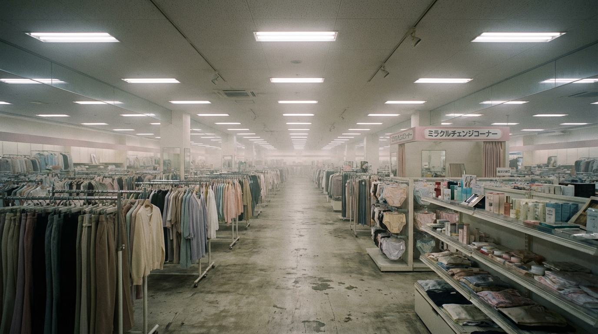
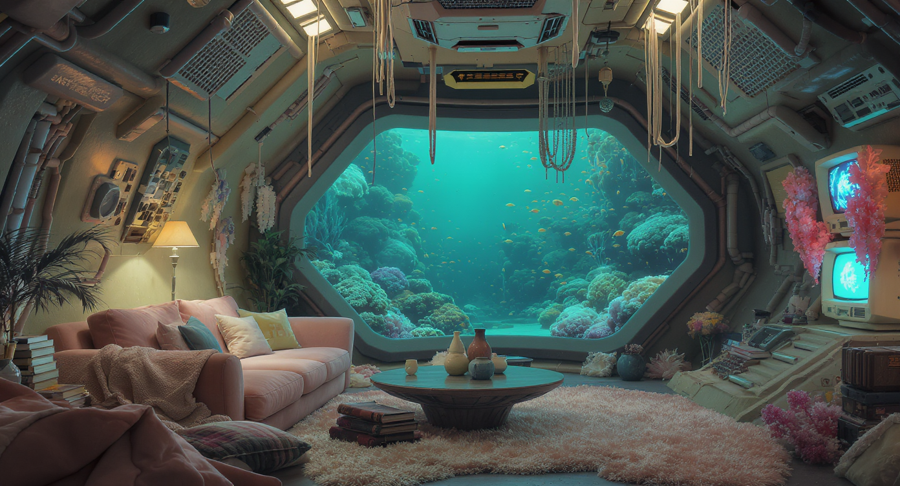
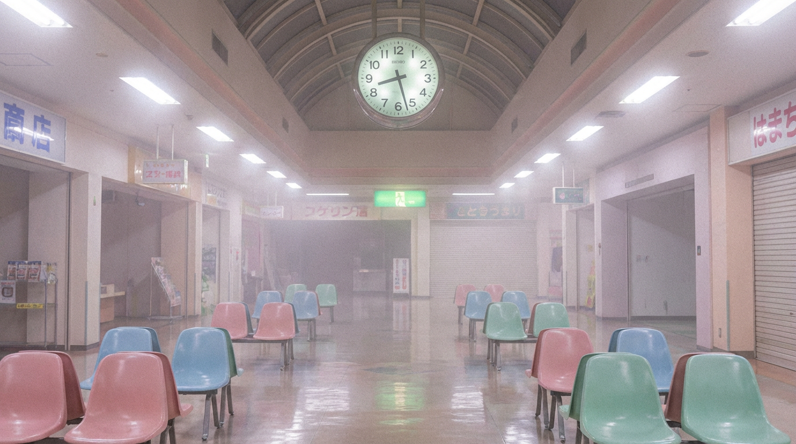
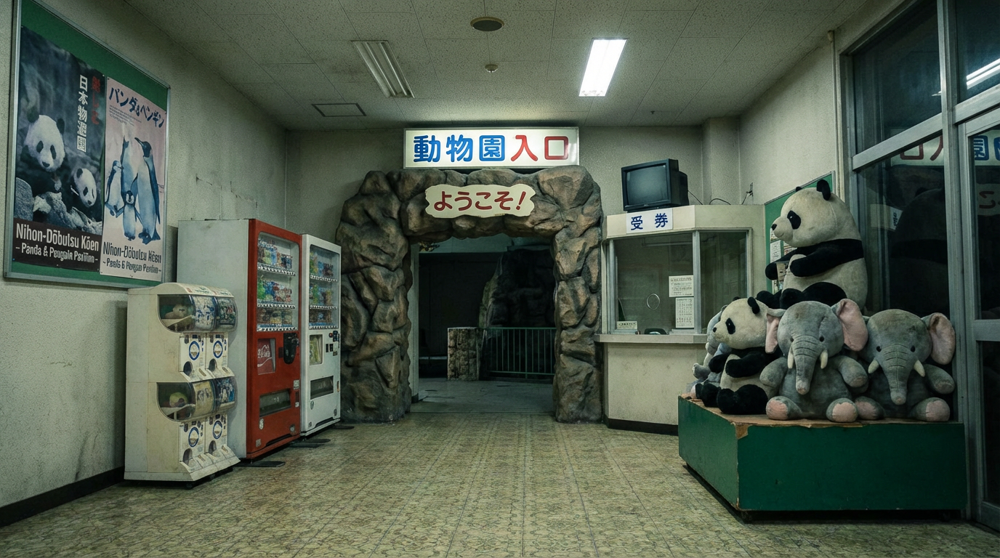

AIを活用した動画制作
Concept Images

日常の違和感

海底に沈む潜水艦の部屋

ピンクがかったレトロな静寂

90年代の空気感
-
作品コンセプト
「日常の中に潜む違和感」をテーマにした、リミナルスペース（境界空間）の映像制作です。 視聴者に「どこかで見たことがありそうだけれど、どこにもない」という懐かしさと不安が入り混じった感情を抱かせる世界観を目指しました。
-
制作の意図
日常的な空間にわずかな違和感を加えることで、視聴者の記憶や感情を揺さぶる表現を目指しました。 「懐かしいのに不気味」「安心感があるのに落ち着かない」といった、相反する感覚を同時に抱かせることを意図しています。
-
表現のこだわり
色味は、フィルム写真のような淡くくすんだトーンをベースにし、あえて現実には存在しない違和感のある配色を加えることで、「懐かしさ」と「不安」が同時に存在する空気感を表現しました。 また、粒子感のある質感や静かな空間構成を取り入れることで、時間が止まったような不気味さと懐かしさを演出しています。
-
使用ツール
Adobe Firefly（画像生成）
Gemini / ChatGPT（コンセプト設計）
Premiere Pro（動画編集）